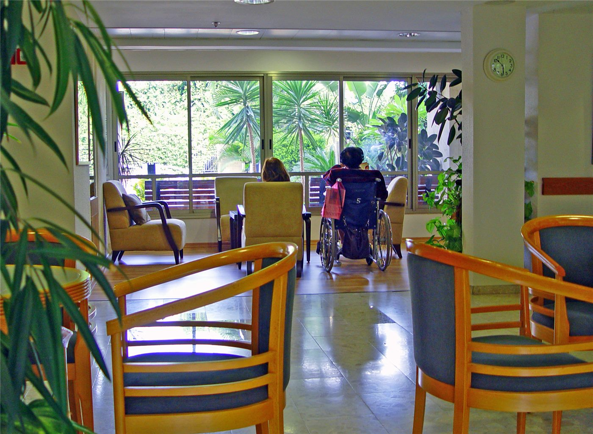

대만 요양시설서 중병 여성 급사… '직원이 화장실서 끌어내' 의혹
대만의 한 요양시설에서 중병을 앓던 여성이 갑자기 숨졌다. 생전 직원이 화장실에서 거칠게 끌어냈다는 의혹이 제기됐다.
전홍발 기자 · 2026.06.20
橋사회

대만의 한 요양시설에서 중병을 앓던 여성이 갑자기 숨졌으며, 생전 직원이 그를 화장실에서 침실로 거칠게 끌고 가 온몸에 상처를 입혔다는 의혹이 제기됐다고 연합보(udn)가 전했다. 관계 당국이 사실관계를 확인하고 있다.
광고 문의 · 300×250돌봄 시설에서의 학대·방임 의혹은 취약한 입소자의 인권과 직결되는 중대한 사안이다. 입소자는 스스로 문제를 알리기 어려운 경우가 많아, 외부의 감시와 신고 체계가 특히 중요하다.
이런 사안은 개별 직원의 일탈인지, 인력 부족과 관리 부실 같은 구조적 문제인지를 함께 따져야 한다. 진상 규명과 함께 재발 방지를 위한 제도 보완이 요구된다.
華橋時報는 돌봄 윤리와 노인 인권의 관점에서 이 사안을 전한다. 고령화가 빠른 한국·대만 모두에서, 돌봄의 질과 존엄은 미룰 수 없는 과제다.
출처·참고 (사실 확인용 — 본문은 직접 재작성)
· 연합보(udn)
· 연합보(udn)